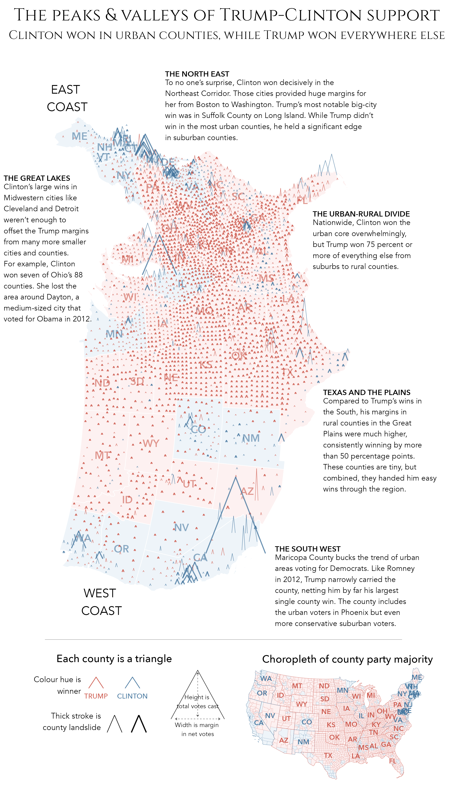

3 Visualization Fundamentals
By the end of this chapter you should gain the following knowledge and practical skills.
3.1 Introduction
This chapter outlines the fundamentals of visualization design. It offers a position on what effective data graphics should do, before discussing the processes that take place when creating data graphics. It will outline a framework – a vocabulary and grammar – for supporting this process which, combined with established knowledge around visual perception, can be used to describe, evaluate and create effective data graphics. Talking about a vocabulary and grammar of data and graphics may sound somewhat abstract. However, through an analysis of 2019 General Election results data the chapter will demonstrate how these concepts are fundamental to visual data analysis.
3.2 Concepts
3.2.1 Effective data graphics
Data graphics take numerous forms and are used in many different ways by scientists, journalists, designers and many more. Whilst the intentions of those producing data graphics varies, those that are effective generally have the following characteristics:
- Represent complex datasets, exposing structure, connections and comparisons that could not be achieved easily via other means.
- Are data rich, presenting many numbers in a small space.
- Reveal patterns at several levels of detail, from broad overview to fine structure.
- Are concise, emphasising dimensions of a dataset without extraneous details.
- Generate an aesthetic response, encouraging people to engage with the data or question.
Given these characteristics, consider the data graphic below (Figure 3.1), which presents an analysis of the 2016 US Presidential Election, or the Peaks and Valleys of Trump and Clinton’s Support. The map is reproduced from an article in the The Washington Post. Included in the bottom margin is a choropleth map coloured according to party majority, more standard practice for reporting county-level voting.
The Washington Post graphic is clearly data rich, encoding many more data items than does the standard choropleth. It is not simply the data density that makes the graphic successful; there are careful design choices which help support comparison and emphasise complex structure. By varying the height of triangles according to the number of votes cast, the thickness according to whether or not the result for Trump/Clinton was a landslide and rotating the map 90 degrees, the very obvious differences between metropolitan, densely populated coastal counties that voted emphatically for Clinton and the vast number of suburban, provincial town and rural counties (everywhere else) that voted Trump, are exposed.

3.2.2 Grammar of Graphics
Data graphics visually display measured quantities by means of the combined use of points, lines, a coordinate system, numbers, symbols, words, shading, and color.
Tufte (1983)
In evidence in the Washington Post graphic is a judicious mapping of data to visuals and a clear understanding of analysis context. This act of carefully considering how best to leverage visual systems given the available data and analysis priorities is key to designing effective data graphics. Leland Wilkinson’s Grammar of Graphics (1999) captures this process of turning data into visuals. Wilkinson (1999)’s thesis is that if graphics can be described in a consistent way according to their structure and composition, then the process of generating graphics of different types can be systematised. This has obvious benefits for building visualization toolkits. Different chart types and combinations can be specified systematically, thereby formalising data visualization design.
Wilkinson (1999)’s grammar separates the construction of a data graphic into a series of components. Below are the components of the Layered Grammar of Graphics on which ggplot2 is based (Wickham 2010), adapted from Wilkinson (1999)’s original work. The components in Figure 3.2 are together used to create ggplot2 specifications. Those to highlight at this stage are in emphasis: the data containing the variables of interest, the marks used to represent data and the visual channels through which variables are encoded.

To demonstrate this, let’s generate some scatterplots based on the 2019 General Election data. Two variables worth exploring for association here are: con_1719, the change in Conservative vote share by constituency between 2017-2019, and leave_hanretty, the size of the Leave vote in the 2016 EU referendum, estimated at Parliamentary Constituency level (see Hanretty 2017).
In Figure 3.3 are three plots, accompanied by ggplot2 specifications used to generated them. Reading-off the graphics and the associated code, you should get a feel for how ggplot2 specifications are constructed:
- Start with a data frame, in this case 2019 General Election results for UK Parliamentary Constituencies. The data are passed to ggplot2 (
ggplot()) using the pipe operator (|>). Also at this stage, we consider the variables to encode and their measurement type – bothcon_1719andleave_hanrettyareratioscale variables. - Next is the encoding (
mapping=aes()), which determines how the data are to be mapped to visual channels. A scatterplot is a 2D representation in which horizontal and vertical position varies in a meaningful way, in response to the values of a dataset. Here the values ofleave_hanrettyare mapped along the x-axis and the values ofcon_1719are mapped along the y-axis. - Finally, we represent individual data items with marks using the
geom_pointgeometry.
In the middle plot, the grammar is updated such that the points are coloured according to winning_party, a variable of type categorical nominal. In the bottom plot constituencies that flipped from Labour-to-Conservative between 2017-19 are emphasised by varying the shape (filled and not filled) and transparency (alpha) of points. flipped is labelled an ordinal variable, but strictly it is a nominal (binary) variable. In the plot, constituencies that flipped are given greater visual emphasis and so it is appropriate to call flipped an ordinal variable.

3.2.3 Marks and visual channels
You might have noticed that in our descriptions we introduced marks as another term for geometry and visual encoding channels as another term for aesthetics. We also paid special attention to the data types that are being encoded. Marks are graphical elements such as bars, lines, points, ellipses that can be used to represent data items. In ggplot2, these are accessed through the function layers prefaced with geom_*. Visual channels are attributes such as colour, size, position that, when mapped to data, control the appearance of marks in response to the values of a dataset.
Marks and channels are terms used widely in Information Visualization, an academic discipline devoted to the study of data graphics, and most notably by Tamara Munzner (2014) in her textbook Visualization Analysis and Design. Munzner (2014)’s work synthesises over foundational research in Information Visualization and Cognitive Science testing how effective different visual channels are at supporting different tasks. Figure 3.4 is taken from Munzner (2014) and lists the main visual channels with which data might be encoded. The grouping and order of the figure is meaningful. Channels are grouped according to the tasks to which they are best suited and then ordered according to their effectiveness at supporting those tasks. The top row displays magnitude:order channels – those that are best suited to tasks aimed at quantifying data items. The bottom row displays identity:category channels – those that are most suited to supporting tasks that involve isolating, grouping and associating data items.

3.2.4 Evaluating designs
The effectiveness rankings of visual channels in Figure Figure 3.4 are not simply based on Munzner’s preference. They are informed by detailed experimental work by Cleveland and McGill (1984), later replicated by Heer and Bostock (2010), which involved conducting controlled experiments testing people’s ability to make judgements from graphical elements. We can use Figure 3.4 to help make decisions around which data item to encode with which visual channel. This is particularly useful when designing data-rich graphics, where several data items are to be encoded simultaneously (e.g. Beecham et al. 2021). Figure 3.4 also offers a low cost way of evaluating different designs against their encoding effectiveness.
To illustrate this, we can use Munzner’s ranking of channels to evaluate the Washington Post graphic discussed in Figure 3.1. Table 3.2 provides a summary of the encodings used in the graphic. US counties are represented using a peak-shaped mark. The key purpose of the graphic is to depict the geography of voting outcomes, and the most effective quantitative channel – position on an aligned scale – is used to order the county marks with a 2D geographic arrangement. With the positional channels taken, the two quantitive measures are encoded with the next highest ranked channel, 1D length: height varies according to number of total votes cast and width according to margin size. The marks are additionally encoded with two categorical variables: whether the county-level result was a landslide and also the winning party. Since the intention is to give greater visual saliency to counties that resulted in a landslide, this as an ordinal variable, encoded with a quantitative channel: 2D area. The winning party, a categorical nominal variable, is encoded using colour hue.
| Data item | Type | Channel | Rank |
|---|---|---|---|
| Magnitude:Order | |||
| County location | interval | position in x,y | 1. quant |
| Total votes cast | ratio | length | 3. quant |
| Margin size | ratio | length | 3. quant |
| Is landslide | ordinal | area | 5. quant |
| Identity:Category | |||
| Winning party | nominal | colour hue | 2. cat |
Each of the encoding choices follow conventional wisdom in that data items are encoded using visual channels appropriate to their measurement level. Glancing down the “rank” column, the graphic has high effectiveness. Whilst technically spatial region is the most effective channel for encoding nominal data, it is already in use as the marks are arranged by geographic position. Additionally, it makes sense to distinguish Republican and Democrat wins using the colours with which they are always represented. Given the fact that the positional channels represent geographic location, length to represent votes cast and vote margin, the only superior visual channel to 2D area that could be used to encode the landslide variable is orientation. There are very good reasons for not varying the orientation of the arrow marks. Most obvious is that this would undermine perception of length encodings used to represent the vote margin (width) and absolute vote size (height).
Data visualization design almost always involves trade-offs. When deciding on a design configuration, it is necessary to prioritise data and analysis tasks, then match representations and encodings that are most effective to the tasks that have the greatest priority. This constrains the encoding options for less important data items and tasks. Good visualization design is sensitive to this interplay between tasks, data and encoding.
3.2.5 Symbolisation
Symbolization is the process of encoding something with meaning in order to represent something else. Effective symbol design requires that the relationship between a symbol and the information that symbol represents (the referent) be clear and easily interpreted.
White (2017)
Implicit in the discussion above, and when making design decisions, is the importance of symbolisation. From the original Washington Post article, the overall pattern that can be discerned is of population-dense coastal and metropolitan counties voting Democrat – densely-packed, tall, wide and blue marks – contrasted against population-sparse rural and small town areas voting Republican – short, wide and red marks. The graphic evokes a distinctive landscape of voting behaviour, emphasised by its caption: “The peaks and valleys of Trump and Clinton’s support”.
Symbolisation is used equally well in a variant of the graphic emphasising two-party Swing between the 2012 and 2016 elections (Figure 3.5). Each county is represented as a | mark. The Swing variable is then encoded by continuously varying mark angles: counties swinging Republican are angled to the right /; counties swinging Democrat are angled to the left \. Although angle is a less effective channel at encoding quantities than is length, there are obvious links to the political phenomena in the symbolisation – angled right for counties that moved to the right politically. There are further useful properties in this example. Since county voting is spatially auotocorrelated, we quickly assemble from the graphic dominant patterns of Swing to the Republicans (Great Lakes, rural East Coast), predictable Republican stasis (the mid west) and to detect more isolated, locally exceptional Swings to the Democrats (rapidly urbanising counties in the deep south).

3.2.6 Colour
The ultimate rule when using colour in data graphics is to use properties of colour that match the properties of the data. Categorical nominal data – data that cannot be easily ordered – should be encoded using discrete colours with no obvious order; so colour hue. Categorical ordinal data – data whose categories can be ordered – should be encoded with colours that contain an intrinsic order; saturation or brightness, usually allocated into gradients. Quantitative data – data that can be ordered and contain values on a continuous scale – should also be encoded with saturation or brightness, expressed on a continuous scale. As we will discover shortly, these principles are applied by default in ggplot2, along with access to perceptually uniform schemes.
There are very many considerations when using colour to support visual data analysis and communication. Lisa Charotte-Rost’s Guide to Colours in Data Visualization is an excellent outline of the decision-space.
3.3 Techniques
The technical component of this chapter analyses data from the 2019 UK General Election, reported at Parliamentary Constituency level. After importing and describing the dataset, we will generate data graphics that expose patterns in voting behaviour by writing ggplot2 specifications.
- Download the 03-template.qmd file for this chapter and save it to the
reportsfolder of yourvis4sdsproject. - Open your
vis4sdsproject in RStudio and load the template file by clickingFile>Open File ...>reports/03-template.qmd.
3.3.1 Import
The template file lists the required packages – tidyverse, sf and also parlitools. Installing parlitools brings down the 2019 UK General Election dataset, along with other constituency-level datasets. Loading it with library(parlitools) makes these data available to your R session.
The data frame containing 2019 UK General Election data is called bes_2019. This stores results data released by House of Commons Library. We can get a quick overview with a call to glimpse(<dataset-name>). bes_2019 contains 650 rows, one for each parliamentary constituency, and 118 columns. Contained in the columns are variables reporting vote numbers and shares for the main political parties for 2019 and 2017 General Elections, as well as names and codes (IDs) for each constituency and the county, region and country in which they are contained.
The technical component replicates some of the visual data analysis in Beecham (2020). For this we need to calculate an additional variable, Butler Swing (Butler and Van Beek 1990); the average change in share of the vote won by two parties contesting successive elections. Code for calculating this variable (named swing_con_lab) is in the 03-template.qmd. The only other dataset to load is a .geojson file containing simplified geometries of constituencies, collected originally from ONS Open Geography Portal. This is a special class of data frame containing a Simple Features geometry column.
3.3.2 Summarise
You may be familiar with the result of the 2019 General Election: a landslide Conservative victory that confounded expectations. To start, we can quickly compute some summary statistics around the vote. In the code block below, we count the number of seats won and overall vote share by party. For the latter, the code is a little more elaborate than we might wish at this stage. We needed to reshape the data frame using pivot_wider() such that each row represents a vote for a party in a constituency. From here the vote share for each party can be easily computed.
Whilst the Conservative party hold 56% of constituencies, they won only 44% of the vote share. The equivalent figures for Labour are 31% and 32% respectively. Incidentally, whilst the Conservatives increased their share of constituencies from 2017 (where they had just 317, 49% of constituencies) their vote share increase was reasonably small – in 2017 they gained 43% of the vote. This fact is interesting as it may suggest some shift in where, which constituencies, the Conservative party gained majorities.
# Number of constituencies won by party.
bes_2019 |>
group_by(winner_19) |>
summarise(count=n()) |>
arrange(desc(count))
## # A tibble: 11 x 2
## winner_19 count
## <chr> <int>
## 1 Conservative 365
## 2 Labour 202
## 3 Scottish National Party 48
## 4 Liberal Democrat 11
## 5 Democratic Unionist Party 8
## 6 Sinn Fein 7
## 7 Plaid Cymru 4
## 8 Social Democratic & Labour Party 2
## 9 Alliance 1
## 10 Green 1
## 11 Speaker 1
# Share of vote by party.
bes_2019 |>
# Select cols containing vote counts by party.
select(
constituency_name, total_vote_19, con_vote_19:alliance_vote_19, region
) |>
# Pivot to make each row a vote for a party in a constituency.
pivot_longer(
cols=con_vote_19:alliance_vote_19, names_to="party", values_to="votes"
) |>
# Use some regex to pull out party name.
mutate(party=str_extract(party, "[^_]+")) |>
# Summerise over parties.
group_by(party) |>
# Calculate vore share for each party.
summarise(vote_share=sum(votes, na.rm=TRUE)/sum(total_vote_19)) |>
# Arrange parties descending on vote share.
arrange(desc(vote_share))
## # A tibble: 12 x 2
## party vote_share
## <chr> <dbl>
## 1 con 0.436
## 2 lab 0.321
## 3 ld 0.115
## 4 snp 0.0388
## 5 green 0.0270
## 6 brexit 0.0201
## 7 dup 0.00763
## 8 sf 0.00568
## 9 pc 0.00479
## 10 alliance 0.00419
## 11 sdlp 0.00371
## 12 uup 0.00291Below are some summary statistics computed over the newly created swing_con_lab variable. As the Conservative and Labour votes are negligible in Northern Ireland, it makes sense to focus on Great Britain for our analysis of Conservative-Labour Swing and so the first step in the code is to create a new data frame filtering out Northern Ireland.
data_gb <- bes_2019 |>
filter(region != "Northern Ireland") |>
mutate(
# Recode to 0 Chorley incoming speaker, Buckingham outgoing speaker.
swing_con_lab=if_else(constituency_name %in% c("Chorley", "Buckingham"),
0,
0.5*((con_19-con_17)-(lab_19-lab_17))
)
)
data_gb |>
summarise(
min_swing=min(swing_con_lab),
max_swing=max(swing_con_lab),
median_swing=median(swing_con_lab),
num_swing=sum(swing_con_lab>0),
num_landslide_con=sum(con_19>50, na.rm=TRUE),
num_landslide_lab=sum(lab_19>50, na.rm=TRUE)
)
## # A tibble: 1 x 6
## min_swing max_swing median_swing num_swing num_landslide_con num_landslide_lab
## <dbl> <dbl> <dbl> <int> <int> <int>
## 1 -6.47 18.4 4.44 599 280 1203.3.3 Plot distributions

Let’s start with ggplot2 specifications by plotting some of these variables. Below is the code for plotting a histogram of the Swing variable.
data_gb |>
ggplot(mapping=aes(swing_con_lab)) +
geom_histogram()A reminder of the general form of the ggplot2 specification:
- Start with some data:
data_gb. - Define the encoding:
mapping=aes(), into which we pass theswing_con_labvariable. - Specify the marks to be used:
geom_histogram()in this case.
Different from the scatterplot example, there is more happening in the internals of ggplot2 when creating a histogram. The Swing variable is partitioned into bins and observations in each bin are counted. The x-axis (bins) and y-axis (counts by bin) is therefore derived from the supplied swing_con_lab variable.
By default the histogram’s bars are given a grey colour. To set them to a different colour, add a fill= argument to geom_histogram(). In the code block below, colour is set using hex codes – "#003c8f", based on the theme for this book. The term set, not map or encode, is used for principled reasons. Any part of a ggplot2 specification that involves encoding data – mapping a data item to a visual channel – should be specified through the mapping=aes() argument. Anything else, for example changing the default colour, thickness and transparency of marks, needs to be set outside of this argument.
data_gb |>
ggplot(mapping=aes(swing_con_lab)) +
geom_histogram(fill="#003c8f") +
labs(x="Swing", y="count")You will notice that different elements of a ggplot2 specification are added (+) as layers. In the example above, the additional layer of labels (labs()) is not intrinsic to the graphic. However, often you will add layers that do affect the graphic itself. For example, the scaling of encoded values (e.g. scale_*_continuous()) or whether the graphic is to be conditioned on another variable to generate small multiples for comparison (e.g. facet_*()). Adding a call to facet_*(), we can compare how Swing varies by region (Figure 3.7). The plot is annotated with the median value for Swing (4.4) by adding a vertical line layer (geom_vline()) set with an x-intercept at this median value. From this, there is some evidence of a regional geography to the 2019 vote: London and Scotland are particularly distinctive in containing relatively few constituencies swinging greater than the expected midpoint; North East, Yorkshire & The Humber, and to a lesser extent West and East Midlands, appear to show the largest relative number of constituencies swinging greater than the midpoint.

3.3.4 Plot ranks/magnitudes

Previously we calculated overall vote share by political party. We could continue the exploration of votes by region, re-using this code to generate plots displaying quantities but also comparing by region, using marks and encoding channels that are suitable for magnitudes.
To generate a bar chart similar to the left of Figure 4.3 the ggplot2 specification would be:
data_gb |>
# The code block summarising vote by party.
<some dplyr code> |>
# To be piped to ggplot2.
# Ordinal x-axis (party, reordered), Ratio y-axis (vote_share).
ggplot(aes(x=reorder(party, -vote_share), y=vote_share)) +
geom_col(fill="#003c8f") +
coord_flip()A quick breakdown of the specification:
- Data: This is the summarised data frame in which each row is a political party and the column describes the vote share recorded for that party.
-
Encoding: We have dropped the call to
mapping=. ggplot2 always looks foraes()and so can save some code clutter. In this case we are mappingpartyto the x-axis, a categorical variable made ordinal by the fact that we reorder the axis left-to-right descending according tovote_share.vote_shareis mapped to the y-axis – so encoded using bar length on an aligned scale, an effective channel for conveying magnitudes. -
Marks:
geom_col()for generating the bars. -
Setting: Again, we’ve set bar colour according to the book theme. Optionally we add a
coord_flip()layer in order to display the bars horizontally. This makes the category axis labels easier to read and also seems more appropriate for the visual “ranking” of bars.
Faceting by region

In Figure 3.9 the graphic is faceted by region. This requires an updated derived dataset grouping by vote_share and region and of course adding a faceting layer (geom_facet(~region)) to the ggplot2 specification. The graphic is more data-rich, but additional cognitive effort is required in relating the bars representing political parties between different graphical subsets. We can assist this associative task by encoding the bars with an appropriate visual channel: colour hue. The ggplot2 specification for this is as you would expect; we add a mapping to geom_col() and pass the variable name party to the fill argument (aes(fill=party)).
data_gb |>
# The code block summarising vote by party and region.
<some dplyr code> |>
# To be piped to ggplot2.
ggplot(aes(x=reorder(party, vote_share), y=vote_share)) +
geom_col(aes(fill=party)) +
coord_flip() +
facet_wrap(~region)Trying this for yourself, you will observe that the ggplot2 internals do some thinking for us. Since party is a categorical variable, a categorical hue-based colour scheme is automatically applied. Try passing a quantitative variable (fill=vote_share) and see what happens; a quantitative colour gradient scheme is applied.
Clever as this is, when encoding political parties with colour, symbolisation is important. It makes sense to represent political parties using colours with which they are most commonly associated. We can override ggplot2’s default colour by adding a scale_fill_manual() layer into which a vector of hex codes describing the colour of each political party is passed (party_colours). We also need to tell ggplot2 which element of party_colours to apply to which value of the party variable. In the code below, a derived table is generated summarising vote_share by political party and region. In the final line the party variable is recoded as a factor. You might recall from the last chapter that factors are categorical variables of fixed and orderable values – levels. The call to mutate() recodes party as a factor variable and orders the levels according to overall vote share.
# Generate derived data.
temp_party_shares_region <- data_gb |>
select(
constituency_name, region, total_vote_19, con_vote_19:alliance_vote_19
) |>
pivot_longer(
cols=con_vote_19:alliance_vote_19, names_to="party", values_to="votes"
) |>
mutate(party=str_extract(party, "[^_]+")) |>
group_by(party, region) |>
summarise(vote_share=sum(votes, na.rm=TRUE)/sum(total_vote_19)) |>
filter(party %in% c("con", "lab", "ld", "snp", "green", "brexit", "pc")) |>
mutate(
party=factor(party,
levels=c("con", "lab", "ld", "snp", "green", "brexit" "pc")
)
)Next, a vector of objects is created containing the hex codes for the colours of political parties (party_colours). This is a named vector, with names assigned from the levels of the party variable that was just created.
The ggplot2 specification is then updated with the scale_fill_manual() layer:
temp_party_shares_region |>
ggplot(aes(x=reorder(party, vote_share), y=vote_share)) +
geom_col(aes(fill=party)) +
scale_fill_manual(values=party_colours) +
coord_flip() +
facet_wrap(~region)The idea behind visualization toolkits such as ggplot2 is to insert visual data analysis approaches into the Data Scientist’s workflow. Rather than being overly concerned with low-level aspects of drawing, mapping to screen coordinates and scaling factors, the analyst instead focuses on aspects relevant to the analysis – the variables in a dataset and how they will be variously encoded and conditioned using visuals to expose structure and effect comparison. Hadley Wickham talks about the type of workflow used throughout this book – bits of dplyr to prepare data for charting before being piped (|>) to a ggplot2 specification – as equivalent to a grammar of interactive graphics.
The process of searching for, defining and inserting manual colour schemes for creating Figure 3.9 might seem inimical to this. Indeed we were reluctant to include this code so early – there is some reasonably advanced dplyr and a little regular expression in the data preparation code that you should not be overly concerned with. Having control of these slightly more low-level properties is sometimes necessary even for exploratory analysis, in this case for enabling appropriate and sensible symbolisation.
3.3.5 Plot relationships

To continue the investigation of change in vote shares for the major parties between 2017 and 2019, Figure 3.10 contains a scatterplot of Conservative vote share in 2019 (y-axis) against vote share in 2017 (x-axis). The graphic is annotated with a diagonal line. If constituencies voted in 2019 in exactly the same way as 2017, the points would converge on the diagonal, points above the diagonal indicate a larger Conservative vote share than 2017, those below the diagonal represent a smaller Conservative vote share than 2017. Points are coloured according to the winning party in 2019 and constituencies that flipped from Labour to Conservative are emphasised using transparency and shape.
The code for generating most of the scatterplot comparing Conservative vote shares is below.
data_gb |>
mutate(winner_19=case_when(
winner_19 == "Conservative" ~ "Conservative",
winner_19 == "Labour" ~ "Labour",
TRUE ~ "Other"
)) |>
ggplot(aes(x=con_17, y=con_19)) +
geom_point(aes(colour=winner_19), alpha=.8) +
geom_abline(intercept = 0, slope = 1) +
scale_colour_manual(values=c(con,lab,other)) +
...Hopefully there is little surprising here:
-
Data: The
data_gbdata frame. Values ofwinner_19that are not Conservative or Labour are recoded to Other using a conditional statement. This is because points are eventually coloured according to winning party, but the occlusion of points adds visual complexity and so the two main parties are retained and remaining parties recoded toOther. -
Encoding: Conservative vote share in 2017 and 2019 are mapped to the x- and y- axes respectively and
winner_19to colour.scale_colour_manual()is used for customising the colours. -
Marks:
geom_point()for generating the points of the scatterplot;geom_abline()for drawing the reference diagonal.
case_when allows you to avoid writing multiple if_else() statements. It wasn’t strictly necessary here, as a single if_else() would have sufficed:
data_gb |>
mutate(
winner_19=
if_else(!winner_19 %in% c("Conservative", "Labour"), "Other", winner_19)
)A general point from the code blocks in this chapter is of the importance of proficiency in dplyr. Throughout the book you will find yourself needing to calculate new variables, recode variables, and reorganise data frames before passing through to ggplot2.
3.3.6 Plot geography

Implicit in the data graphics above is that the composition of Conservative and Labour voting may be shisting. If so, then paying attention to the geography to voting, certainly to observed changes in voting between 2017 and 2019 elections (e.g. Figure 3.7), may be instructive. We end the chapter by generating thematic maps of the results data.
To do this we need to genetae a join on the boundary dataset loaded at the start of this technical section (cons_outline):
# Join constituency boundaries.
data_gb <- cons_outline |>
inner_join(data_gb, by=c("pcon19cd"="ons_const_id"))
# Check class.
## [1] "sf" "data.frame"The code for generating the Choropleth maps of winning party by constituency in Figure 3.11:
# Recode winner_19 as a factor variable for assigning colours.
data_gb <- data_gb |>
mutate(
winner_19=if_else(winner_19=="Speaker", "Other", winner_19),
winner_19=as_factor(winner_19))
# Create a named vector of colours
party_colours <- c(con, lab, ld, green, other, snp, pc)
names(party_colours) <- levels(data_gb |> pull(winner_19))
# Plot map.
data_gb |>
ggplot(aes(fill=winner_19)) +
geom_sf(colour="#eeeeee", linewidth=0.01)+
# Optionally add a layer for regional boundaries.
# geom_sf(
# data=. |> group_by(region) |> summarise(),
# colour="#eeeeee", fill="transparent", linewidth=0.08
# )+
coord_sf(crs=27700, datum=NA) +
scale_fill_manual(values=party_colours)A breakdown of the ggplot2 spec:
-
Data: The
dplyrcode updatesdata_gbby recodingwinner_19as a factor and defining a named vector of colours to supply toscale_fill_manual(). -
Encoding: No surprises here –
fillaccording towinner_19. -
Marks:
geom_sf()is a special class of geometry. It draws objects using the contents of thegeometrycolumn. In this caseMULTIPOLYGON, so read this as a polygon geometric primitive. -
Coordinates:
coord_sf– we set the coordinate system (CRS) explicitly. In this case OS British National Grid. -
Setting: Constituency boundaries are subtly introduced by setting the
geom_sf()mark to light grey (colour="#eeeeee") with a thin (size=0.01) outline. On the map to the right outlines for regions are added as anothergeom_sflayer.
In the third map of Figure 3.11 the transparency (alpha) of filled constituencies is varied according to the Swing variable. This does demonstrate that constituencies swinging most dramatically for Conservative (darker colours) are in the midlands and North of England and not in London and the South East. The pattern is nevertheless a subtle one; transparency (colour luminance / saturation) is not a highly effective visual channel. It may be worth applying the same encoding to Butler two-party swing as that used in the Washington Post graphic when characterising Republican-Democrat swing in 2016 US Elections (e.g. Beecham (2020)).
This can be achieved by simply adding another ggplot2 layer, though the code is a little more involved. ggplot2’s geom_spoke() primitive draws line segments parameterised by a location (x,y position) and angle. With this we can encode constituencies with | marks that angle to the right / where the constituency swings towards Conservative and to the left where it swings towards Labour \. This encoding better exposes the pattern of constituencies forming Labour’s “red wall” in the north of England, as well as parts of Wales and the Midlands, flipping to Conservative.

And the ggplot2 specification:
# Find the maximum Swing values, to pin the min and max angles to.
max_shift <- max(abs(data_gb |> pull(swing_con_lab)))
min_shift <- -max_shift
# Re-define party_colours to contain just three values: hex codes for
# Conservative, Labour and Other.
party_colours <- c(con, lab, other)
names(party_colours) <- c("Conservative", "Labour", "Other")
# Plot Swing map.
data_gb |>
mutate(
is_flipped=seat_change_1719 %in%
c("Conservative gain from Labour","Labour gain from Conservative"),
elected=
if_else(!winner_19 %in% c("Conservative", "Labour"), "Other",
as.character(winner_19)),
swing_angle=get_radians(map_scale(swing_con_lab,min_shift,max_shift,135,45)
)
) |>
ggplot()+
geom_sf(aes(fill=elected), colour="#636363", alpha=.2, linewidth=.01)+
geom_spoke(
aes(x=bng_e, y=bng_n, angle=swing_angle, colour=elected, size=is_flipped),
radius=7000, position="center_spoke"
)+
coord_sf(crs=27700, datum=NA)+
scale_size_ordinal(range=c(.3,.9))+
scale_colour_manual(values=party_colours)+
scale_fill_manual(values=party_colours)A breakdown:
-
Data:
data_gbis updated with a boolean (TRUE/FALSE) variable identifying whether or not the Constituency flipped Con-Lab/Lab-Con between successive elections (is_flipped), and a variable simplifying the party elected to either Conservative, Labour or Other.swing_anglecontains the angles used to orient the line marks. A convenience function (map_scale()) pins the maximum Swing values in either direction to 45 degrees (max Swing to the right, Conservative) and 135 degrees (max Swing to the left, Labour). -
Encoding:
geom_sf()is again filled by elected party. This encoding is made more subtle by adding transparency (alpha=.2).geom_spoke()is mapped to the geographic centroid of each Constituency (bng_e- easting,bng_n- northing), coloured according to elected party, sized according to whether the constituency flipped its vote and tilted or angled according to theswing_anglevariable. -
Marks:
geom_sf()for the constituency boundaries,geom_spoke()for the angled line primitives. -
Scale:
geom_spoke()primitives are sized to emphasise whether constituencies have flipped. The size encoding is censored to two values withscale_size_ordinal(). Passed toscale_colour_manual()andscale_fill_manual()is the vector ofparty_colours. -
Coordinates:
coord_sf– the CRS is OS British National Grid. -
Setting: The
radiusofgeom_spoke()lines is a sensible default arrived at through trial and error, itspositionset using a newly createdcentre_spokeclass.
There are helper functions that must also be run to execute the ggplot2 spec above correctly. In order to position lines using geom_spoke() centred on their x,y location, we need to create a custom ggplot2 subclass. Details of how to use this are in the 03-template.qmd file. Again, this is somwhat involved for a chapter introducing ggplot2 for analysis. Nevertheless, hopefully you can see from the plot specification above that the principles of mapping data to visuals can be implemented straightforwardly in ggplot2 (via aes()): lines marks for constituencies (geom_spoke()), positioned in xand y according to British National Grid easting and northings and oriented (angle) according to two-party Swing.
3.4 Conclusions
Visualization design is ultimately a process of decision-making. Data must be filtered and prioritised before being encoded with marks, visual channels and symbolisation. The most successful data graphics are those that expose structure, connections and comparisons that could not be achieved easily via other, non-visual means. This chapter has introduced concepts – a vocabulary, framework and empirically-informed guidelines – that help support this decision-making process and that underpin modern visualization toolkits, ggplot2 especially. Through an analysis of UK 2019 General Election data, we have demonstrated how these concepts can be applied in a real data analysis.
3.5 Further Reading
For a primer on visualization design principles:
- Munzner, T. 2014. “Visualization Analysis and Design”, CRC Press.
For an introduction to ggplot2 and its relationship with Wilkinson (1999)’s grammar of graphics:
- Wickham, H., Çetinkaya-Rundel, M., Grolemund, G. 2023, “R for Data Science, 2nd Edition”, Orielly.
- Chapter 2.